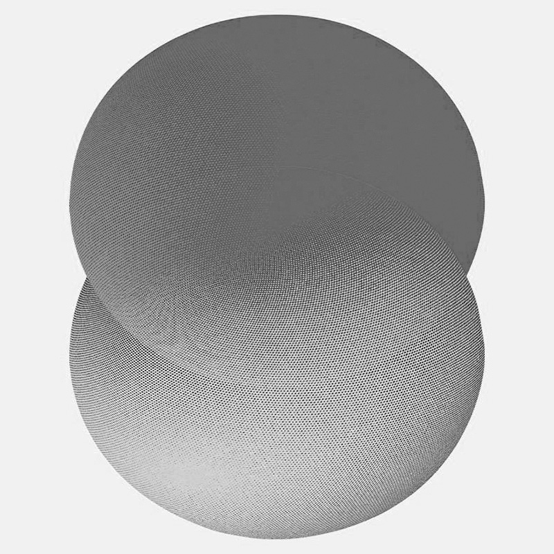
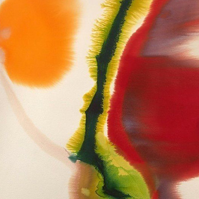
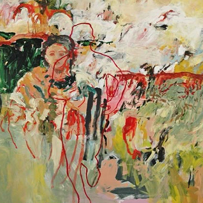
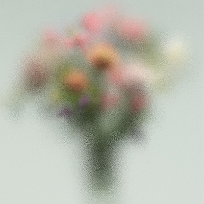
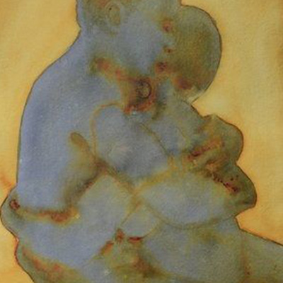
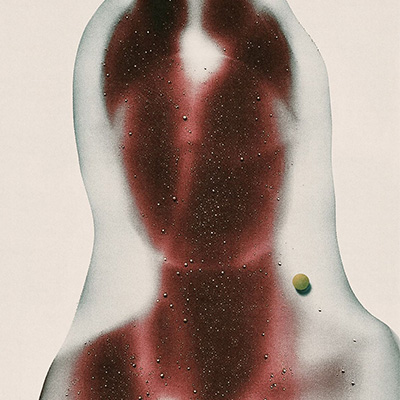
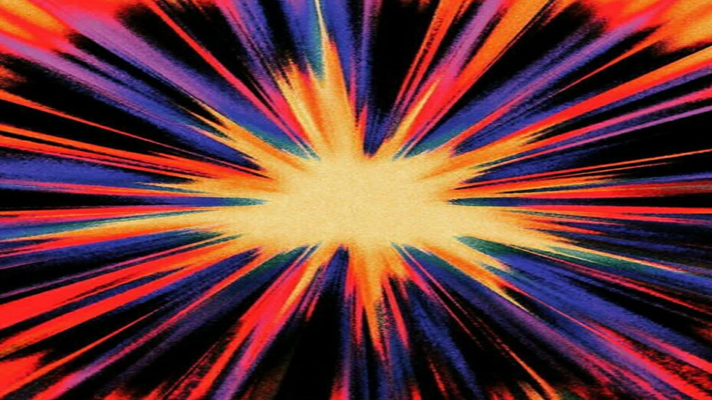

About this project
MoArt is a creative gallery exploring how colors and shapes influence human emotions. Each piece in our collection is not just an image, but a visual anchor for a specific feeling, inviting you to reflect and connect with the hidden colors of your mind. We believe that art is a mirror; the way you perceive a certain shade or form is a direct reflection of your inner landscape. This project is a journey through your own mood palette, designed to help you understand what's inside to navigate what's outside. Take a moment with each work, let its energy seep in, and discover the feeling it evokes in you.

Our Best Pieces





Explore moods

Don't be shy, let the light in